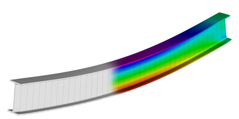
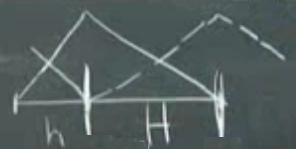
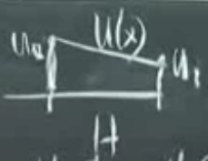

Ders 1-20
Sona yaklaşırken 4'üncü seviye bükülme denklemleri (4th order bending equations) ve öğe matrisleri konusunu biraz daha genişletmek istiyorum, hala sonlu öğeler (FEM) dünyasındayız, öğe matrisleri FEM yaklaşımının öğeleri ve tam matrisler.. Hatırlarsak makaşkirişin her çubuğu $A^T A$'nin bir parçasını veriyordu, ve bu parçalar birleştirilerek $K$ oluşturuluyordu. Bir çizitte her kenar bir satıra 1, -1 diye tekabül edecek şekilde bir matris ortaya çıkartabiliyordu.. Şimdi öğe matrislerinin FEM ile ilişkisini yakından görmek istiyoruz. Bugünkü dersin yarısı bu.

Dersin diğer yarısı 4'uncu derece diferansiyel denklemler. Şimdiye kadar gördüğümüz tüm diferansiyel denklemler ikinci derece idi, 4'uncu derece önemli denklemler var mı diye merak edenler olabilir, evet var. Kiriş bükülmesi problemi bunlardan biri mesela, üstte inşaatlarda kullanılan türden bir kiriş görüyoruz, resim bir stres analizi programından alınmış, mavi, yeşil, kırmızı renkler kiriş uygulanan yükün etkilerini gösteriyor, kırmızı en fazla stres olan yerler mesela, işte üstteki türden çıktılar 4'uncu derece bükülme denklemini gerektiriyor.
Bu tür denklemler bizim $A^T C A$ altyapımıza uyuyor mu? Muhakkak öyle, birazdan göreceğiz.
Tek boyuta dönüş yapalım, analiz edilen cismi parçalara böleceğiz, ve her parça bir öğeye tekabül ediyor olacak. Cisim bir büyük çubuk, kiriş olabilir.. Sonlu farklılıklar (finite differences) ile size araları eşit olmayan izgara noktaları versem ki alttaki resimde mesela $h$ ile $H$ birbirinden farklı olsa, bu FD ile bizi bayağı uğraştırırdı, ikinci farklılıktaki -1, 2, -1 satırı yerine biraz daha dengesiz değerler elde ederdik, bu izgaranın dengesizliği sebebiyle olurdu. FD ile bu durumu ciddi tartmak gerekirdi, FEM ile sistem o düşünme işini bizim için hallediyor, dengesizlikler, olduğu yerlere sistemin yapısı sayesinde doğal olarak çözülüyor.
Basit tek aralığa odaklanalım şimdi, iki tane şapka fonksiyonumuz olsun, her ikisinin de maksimum seviyesi 1,

Fonksiyonumuz iki seçilmiş noktada $u_0$ ve $u_1$ değerlerinde, bu değerlerden ilki $u_0$ çarpı birinci şapkadan geliyor, aynı şekilde ikincisi $u_2$ çarpı ikinci şapkadan.. $u_0$ ve $u_1$ arasında ne olur? Fonksiyon
$$ U(x) = u_0 \phi_0 + u_1 \phi_1 $$
Bu bir lineer fonksiyon, alttaki gibi bir çizgi ile gösterilebilir,

[devam edecek]
Yukarı